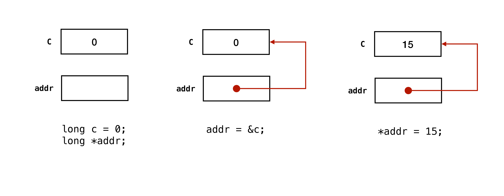

Unit 15: Pointers
Learning Objectives
After this unit, students should:
- understand what the address-of operator,
&, represents and what is its type - be able to use the
&operator to access the address of a variable - understand what the dereference operator,
*, represents - be aware that there is a pointer type associated with each type in C and that when
*is used in the variable declaration it has a different meaning to the dereference operator - be able to define pointer type variables and use the
*operator, including:- declaration of a pointer type variable
- assigning an address (of the appropriate type) to a pointer type variable
- accessing/assigning the value that a pointer variable points at
- assigning a new value by dereferencing a pointer variable
- understand why we cannot only change the address referenced by a variable
- understand the units being stored by a pointer and thus, how arithmetic operations would affect pointers
- be aware of pointers to pointers (and more), and the possibility of multiple levels of dereferencing
- be aware of the
NULLpointer, understand what it represents, and be able to use it
Memory Address of a Variable
You have learned that each variable must have four things: (i) a name, (ii) a type, (iii) a value, and (iv) a memory address.
We have been accessing variables using their names. For instance, consider the line
1 | |
This line copies the value of variable b into variable a. To be more precise, the line takes the value stored in the memory location labeled with the name b, and copies it into the memory location labeled with the name a.
For many other higher-level languages, such as Java, Python, and JavaScript, this is the only way available to manipulate variables. C, however, allows us direct access to the memory addresses of a variable. In this unit, we will see how to update a variable via its address, and how to perform operations on the addresses.
C has an "address-of" operator, &. When we put & in front of a variable, we get the memory address of that variable. For instance, consider the code below:
1 2 3 | |
The last line uses the cs1010_println_pointer function from the CS1010 I/O library to print the memory address of c in decimal format.
The expression &c has the type "address of a long." Note that "address of a long" and long are two different types in C. In general, the expression &x has the type "address of \(T\)" where \(T\) is the type of variable x.
Pointer: A Variable that Stores Address
Recall from the previous unit that in C, a variable that stores a memory address is called a pointer and we can declare it with the * notation.
1 | |
The line above declares a variable named addr with the type long * (i.e., a pointer to long``, or, address of along`). We can write:
1 | |
The line initializes addr with the memory address of c. To be more precise, it takes the memory address of the memory location labeled with name c, and copies it into the memory location labeled with name addr. Sometimes, we also say that the line "points addr to c."
When we store a memory address to a pointer, the types must match. In the example above, both addr and &c refer to the memory address of a long. Now consider this:
1 2 3 | |
Line 3 above would lead to a compilation error since we try to point a double pointer to a long.
One exception to this rule is the type void *. A pointer to void has a special place in C, and it can be used to point to any other type without type errors. The function cs1010_println_pointer, for instance, takes in a parameter of type void *, hence we can pass a pointer of any type to this function as an argument.
Note
The two lines:
1 2 | |
can be shortened to:
1 | |
Note that double *addr = &c is NOT the same as
1 2 | |
The & operator cannot be used on the left-hand side of the assignment operation. For instance
1 2 3 | |
We try to set the address of x to be the address of y. This is not allowed since the address of x is determined by the OS when it is allocated on the stack.
Updating a Variable Using Its Pointer
Now that we know how to access the memory address of a variable and store it in another variable. Let's see how we can update its value using its pointer.
To access a value of a variable through its address, rather than its name, we use the dereference operator *, which is the reverse of the address-of operator.
Suppose we have a pointer variable addr. We can write
1 | |
This line stores 15 into the memory address stored inside variable addr. To be more precise, it takes the value 15 and copies it into the memory location, the address of which is stored in the memory location labeled with the name addr. You can think of this as a two-step operation: (i) Go to memory location labeled addr, access the value stored there; (ii) The value stored in addr is an address. Now, go to the memory location with this address, and store 15 there.
The figure below illustrates the use of & and *.

Segmentation Fault: Memory Error
Updating variables via an address can be dangerous. You could be changing the value in a memory location that you do not mean to. If you are lucky, your program crashes with a segmentation fault error1. We say that your program has segfault. If you are unlucky, your program runs normally but produces incorrect output occasionally.
For instance, suppose you write
1 2 | |
The program will almost certainly crash, because the pointer variable p is not initialized, so it is pointing to the location of whatever address happens to be in the memory at that time. The line *p = 1.0 then copy the value 1.0 to this arbitrary memory address stored in p.
So, always make sure that your pointer is pointing to the right location before dereferencing and writing to the location.
Summary
To recap, suppose we have variables a and b, and a pointer variable addr:
| Assignment | Meaning |
|---|---|
a = b |
Take the value stored in the memory location labeled b, copy it into the memory location labeled a |
addr = &b |
Take the memory address of memory location labeled b, copy it into the memory location labeled addr |
*addr = a |
Take the value stored in the memory location labeled a, copy it into the memory location of which the address is stored in memory location labeled addr |
b = *addr |
Take the value stored in the memory location of which the address is stored in memory location labeled addr, copy it into the memory location labeled b |
Pointer Arithmetic
We can perform arithmetic operations on pointers, but not in the way you expect.
Suppose we have a pointer:
1 2 3 4 5 | |
Suppose that x is stored in memory address 1000, after Line 4, ptr would have the value of 1000.
After the line ptr += 1, using normal arithmetic operation, we would think that ptr will have a value of 1001. However, the semantics for arithmetic operations differ for pointers. The + operation for ptr causes the ptr variable to move forward by the size of the variable pointed to by the pointer. In this example, ptr points to long, assuming that long is 8 bytes, after ptr += 1, ptr will have the value of 1008.
We can only do addition and subtraction for pointers.
Array and Pointer
We now revisit how arrays in C work, in the context of pointers:
-
Array decay: Recall that the name of the array decays into the memory address of the first element of the array. In other words, if we declare an array called
a, then the variableais a synonym with&a[0]. -
Accessing an element of an array: The array notation
a[i]is a synonym with*(a + i). This notation explains why it suffices to pass the memory address of the first element of the array into the function.
Pointer of Pointer (of Pointer..)
A pointer variable is also a variable. This means that it has a name, a type, a value, and a memory address as well.
Let's say we have a pointer variable ptr.
1 2 3 | |
ptr stores the memory address of x, but it has its own memory address. We can have a variable ptrptr that stores the address of ptr. Since the type of ptr is an address of long, the type of ptrptr is an address of an address of long, and can be written as:
1 2 | |
These dereferences can go on since ptrptr is also a variable and therefore has its own memory address. We rarely need to dereference more than twice in practice, but if the situation arises, such multiple layers of dereferencing are possible.
The NULL Pointer
NULL is a special value that is used to indicate that a pointer is pointing to nothing. We use NULL to indicate that the pointer is invalid, typically to mean that we have not initialized the pointer or to flag an error condition.
Billion Dollar Mistakes
Sir Tony Hoare (the same one whom we met when we talked about Assertion) also invented the null pointer. He called it his billion-dollar mistake. Quoting from him: "I couldn't resist the temptation to put in a null reference, simply because it was so easy to implement. This has led to innumerable errors, vulnerabilities, and system crashes, which have probably caused a billion dollars of pain and damage in the last forty years." As you start to use pointers in CS1010, you will see why it is a pain.
Problem Set 15
Problem 15.1
Sketch the content of the memory while tracing through the following code. What would be printed?
1 2 3 4 5 6 7 8 9 10 11 12 13 14 15 16 17 18 19 20 21 22 23 24 25 26 27 28 29 30 | |
Problem 15.2
What is wrong with both programs below?
1 2 3 4 5 6 7 8 9 10 11 12 13 | |
1 2 3 4 5 6 7 8 9 10 11 12 13 | |
-
I leave it to the later OS classes CG2271 / CS2106 to explain the term "segmentation" and "fault". Interested students can always google and read on Wikipedia. ↩